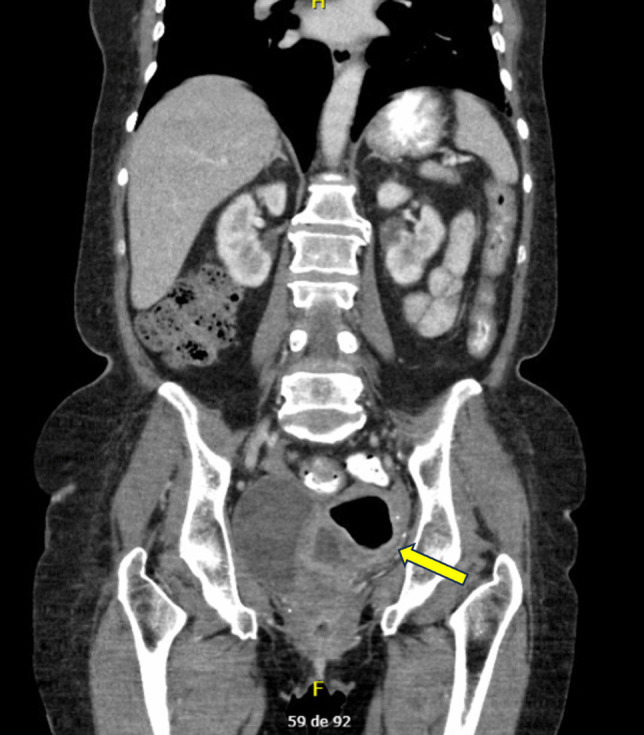
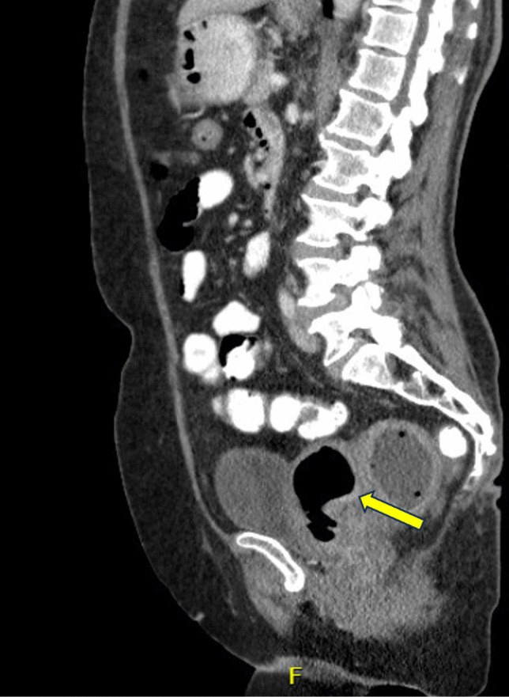
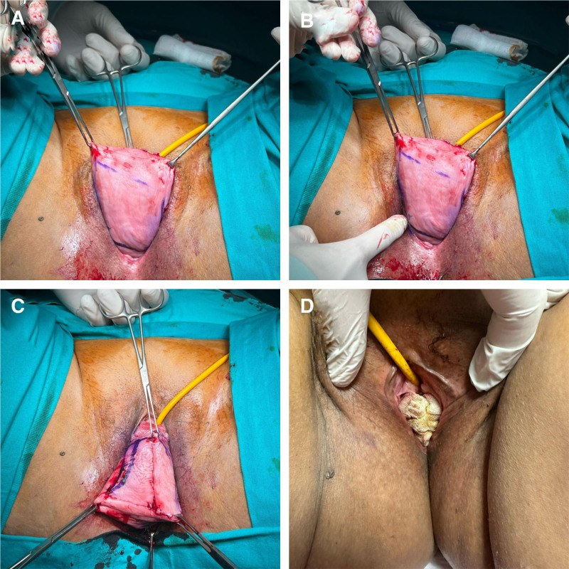
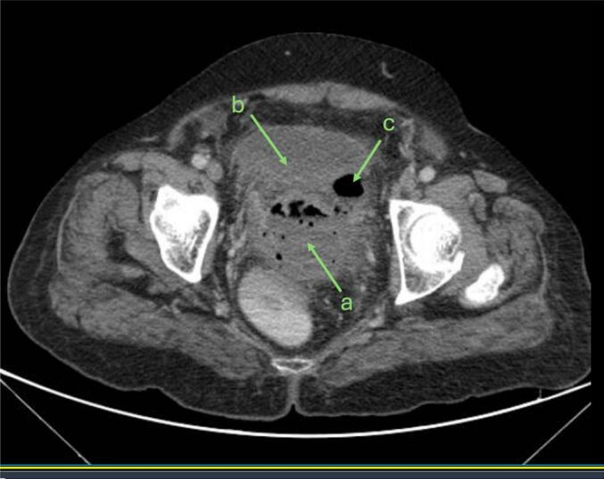

1612 — Colpocleisis: chọn ca, kỹ thuật bịt âm đạo & biến chứng ứ mủ (pyocolpos/pyometra) / Colpocleisis: patient selection, obliterative technique and post-obliteration fluid collections
Tags: pattern:sa-tang-chau pattern:pyocolpos pattern:pyometra vung:chau score:POP-Q protocol:CT-chau-co-can-quang protocol:SA-transperineal incidentaloma:pyocolpos
Mức chắc chắn (certainty): tổng hợp y văn (literature synthesis) — số liệu từ đoàn hệ 58 ca colpocleisis (PMC12851770), loạt 3 ca pyocolpos sau colpocleisis (PMC12925871), tổng quan 7 ca pyometra sau LeFort (PMC12872722), 9 ca bí tiểu được colpocleisis (PMC12776221) và so sánh colpocleisis với vòng nâng (pessary) (PMC13450978); chưa có ca nguyên văn riêng của nhóm.
1. Tổng quan bệnh học – cơ chế hình ảnh
1.1. Colpocleisis là gì và vì sao hình ảnh hậu phẫu lại khó
- Colpocleisis (phẫu thuật bịt âm đạo) là phẫu thuật triệt tiêu (obliterative) khoang âm đạo: bóc biểu mô âm đạo trước–sau rồi khâu hai lớp cơ–niêm mạc vào nhau, kèm tạo hình tầng sinh môn (perineorrhaphy) để thu nhỏ lỗ sinh dục (PMC12872722, PMC12851770). Mục đích không phải "treo" tạng sa mà chặn đường sa ra ngoài.
- Ba biến thể cần phân biệt vì sinh lý dẫn lưu khác nhau:
- LeFort (bịt một phần, giữ tử cung): để lại hai đường hầm (lateral tunnels) hai bên — vừa để theo dõi chảy máu sau mãn kinh, vừa để dẫn lưu dịch tử cung ra ngoài (PMC12872722).
- Bịt toàn bộ kèm cắt tử cung (colpocleisis with hysterectomy): không còn tử cung, mỏm cắt âm đạo bị đóng kín.
- Bịt toàn bộ không cắt tử cung / bịt mỏm cắt sau cắt tử cung (vaginal vault): khoang âm đạo bịt kín nhưng còn tử cung → nguy cơ ứ mủ trong tử cung (pyometra).
- TẠI SAO ứ dịch lại thành mủ: sau bóc biểu mô rộng, khoang mổ là một ổ kín, không có đường dẫn lưu tự nhiên. Máu tụ/thanh dịch (seroma) là môi trường nuôi cấy; vi khuẩn âm đạo đi lên hoặc nhiễm từ mỏm cắt âm đạo sau cắt tử cung → áp-xe hóa. Vì khoang kín, triệu chứng đến muộn 10–15 ngày (không có dịch chảy ra báo hiệu) và khi vỡ/ứ đầy mới sốt cao (PMC12925871).
- TẠI SAO hình ảnh nhìn thấy: dịch–mủ có đậm độ nước 0–20 HU, không ngấm cản quang; thành viêm ngấm cản quang (tăng sinh mạch + phù); hơi (gas) trong ổ kín sau 10 ngày là dấu hiệu áp-xe do vi khuẩn sinh hơi/vi khuẩn đường tiêu hóa, gần như không gặp ở thanh dịch vô khuẩn; mỡ quanh thâm nhiễm (fat stranding) là phản ứng viêm lan. Trong tử cung, mủ + hơi làm lòng tử cung căng, thành mỏng, mức khí–dịch ngang — hình ảnh "ổ áp-xe có vỏ" giữa tiểu khung (PMC12872722 Fig 1–2).
1.2. Ngưỡng định lượng phải nhớ
- Hiệu quả: thành công giải phẫu 91–100%; biến chứng chung 6–15% (PMC12925871). Tổng quan khác: tái phát 0–9,3%, biến chứng chu phẫu 4,6–15,2% (PMC12872722).
- Đoàn hệ 58 ca (tuổi trung bình 75,6 ± 8,2; theo dõi 2,88 ± 1,89 năm): thành công giải phẫu (POP-Q ≤ 2) 94,8%, thành công chủ quan 77,5%, hối tiếc 6,8% (không ai hối tiếc vì mất chức năng giao hợp), nhiễm khuẩn tiết niệu 20,7%, mổ 56,3 ± 13,7 phút, nằm viện 3,16 ± 1,62 ngày, chỉ 1,7% vào ICU (PMC12851770).
- Cắt tử cung cùng thì làm tăng biến chứng: 11,4% so với 9,5%, aOR 1,93 (PMC12925871 dẫn Raina và cộng sự).
- Bí tiểu do sa (urinary retention): 9/75 ca colpocleisis có bí tiểu trước mổ; 8/9 (89%) tự tiểu lại được sau mổ, Qmax 15,9 mL/s, PVR 20 mL, không biến chứng chu phẫu trong theo dõi trung vị 3 tháng (PMC12776221).
- So với vòng nâng (pessary): hài lòng 97,8% so với 90%; cải thiện triệu chứng lớn hơn (VAS 8,9 so với 7,7); 23,3% bỏ vòng nâng, 20% sau đó phải mổ; biến chứng 17,3% so với 26,6% (PMC13450978).
- Pyocolpos sau colpocleisis: xuất hiện 10–15 ngày sau mổ; CRP 112–250 mg/L, WBC 14.200–23.400/mm³, ESR 91–106 mm/h; ổ áp-xe 8 × 6 cm và 11 × 8 × 8 cm trên CT (PMC12925871).
- Pyometra sau LeFort: 7 ca, tuổi trung vị 78 (72–92); 6/7 phải cắt tử cung qua đường bụng (3 ca mổ ngay, 3 ca thất bại điều trị bảo tồn); chỉ 1/7 thành công với dẫn lưu xuyên bụng + nong đường hầm; không ca nào có ung thư nền (PMC12872722).
2. Mẫu hình + chẩn đoán phân biệt theo vị trí (gamut)
2.1. Mẫu hình "khối/dịch tiểu khung sau bịt âm đạo"
- Mẫu hình đúng bệnh: bệnh nhân nữ lớn tuổi, sốt + đau bụng dưới ± chảy dịch âm đạo hôi sau colpocleisis 3 ngày–10 tuần; CT có ổ dịch thành dày, có hơi, thâm nhiễm mỡ quanh, nằm giữa bàng quang và trực tràng (pyocolpos/áp-xe tiểu khung) hoặc trong lòng tử cung (pyometra).
- Ba tầng giải phẫu quyết định tên gọi (đọc theo trục dọc trên CT sagittal):
- Trong lòng tử cung → pyometra (còn tử cung).
- Trong khoang âm đạo đã bịt → pyocolpos (âm đạo là túi kín).
- Ngoài âm đạo, trong phúc mạc/tiểu khung → áp-xe tiểu khung (rectovesical pouch, túi cùng sau).
- Mẹo nhớ 5 nhóm: Ứ (pyocolpos/pyometra) – MÁU (tụ máu mỏm cắt) – RÒ (rò niệu–âm đạo/trực tràng–âm đạo) – NGOÀI (nhiễm khuẩn tiết niệu/hô hấp) – U (ác tính hiếm).
2.2. Gamut theo vị trí
- Trong tử cung: pyometra (ứ mủ), ứ dịch do hẹp cổ tử cung, hoại tử u (rất hiếm), tụ máu trong buồng tử cung.
- Trong âm đạo: pyocolpos, tụ máu âm đạo, ứ dịch do bịt kín, sa tái phát có loét/hoại tử.
- Quanh âm đạo – tiểu khung: áp-xe tiểu khung sau mổ, tụ máu mỏm cắt âm đạo bội nhiễm, rò tiết niệu (urineoma), rò tiêu hóa (áp-xe do xì miệng nối).
- Ngoài tiểu khung (nguyên nhân sốt "che lấp"): nhiễm khuẩn tiết niệu (hay nhất, 20,7%), viêm phổi, nhiễm khuẩn vết mổ, huyết khối tĩnh mạch sâu chi dưới.
3. Bảng so sánh phân biệt (ma trận đối chiếu)
| Thực thể (entity) | Hình ảnh điển hình (US/CT) | Chốt vào (rule-in) | Chốt loại (rule-out) | Gợi ý xác nhận |
|---|---|---|---|---|
| Pyocolpos / áp-xe tiểu khung | Ổ dịch thành dày ngấm cản quang, có hơi, thâm nhiễm mỡ, giữa bàng quang và trực tràng; US transperineal: khối hỗn hợp âm | Sốt 10–15 ngày sau bịt âm đạo + ổ dịch có hơi + CRP > 100 mg/L | Không hơi, không ngấm thành, không thâm nhiễm mỡ → nghĩ thanh dịch/tụ máu đơn thuần | CT bụng–chậu có cản quang; cấy mủ khi dẫn lưu |
| Pyometra (LeFort, còn tử cung) | Tử cung to, lòng căng dịch ± hơi, mức khí–dịch; thành cơ ngấm đều | Còn tử cung + sốt + lòng tử cung căng dịch/hơi trên CT | Tử cung teo, không dịch → loại trừ | CT sagittal + coronal; cấy dịch tử cung |
| Tụ máu mỏm cắt âm đạo | Khối tăng đậm độ 40–80 HU (máu), không hơi, không ngấm; có thể có viền ngấm | Mổ mới < 1 tuần + không sốt/hay sốt nhẹ + khối tăng đậm độ | Hơi trong ổ kín + thành ngấm + sốt cao → áp-xe hóa, không gọi là tụ máu đơn thuần | CT không cản quang + so đậm độ cơ; theo dõi CRP |
| Nhiễm khuẩn tiết niệu | Thận/bàng quang bình thường hoặc dày thành bàng quang; không có ổ dịch tiểu khung | Cấy nước tiểu dương + ổ nhiễm khuẩn niệu điển hình | Không loại trừ áp-xe: 1/3 ca pyocolpos có đồng thời UTI (ESBL) | Cấy máu + nước tiểu; vẫn phải loại trừ ổ tiểu khung nếu sốt cao |
| Rò niệu–âm đạo / trực tràng–âm đạo | Hơi/dịch trong âm đạo đã bịt, đường hầm chứa khí; CT cystography thấy thuốc sang âm đạo | Tiểu không tự chủ liên tục hoặc dịch âm đạo + hơi trong khoang bịt | Không hơi, không thoát thuốc → loại trừ | CT cystography / methylene blue; MRI nếu cần |
| Tổn thương tiêu hóa (xì miệng nối/thủng) | Khí tự do ngoài lòng ruột, dịch tự do, thâm nhiễm mỡ lan; có thể ổ dịch cạnh ruột | Khí ngoài lòng ruột + dịch tự do + bệnh cảnh bụng cấp | Khí khu trú trong ổ áp-xe, không tự do → áp-xe đơn thuần | CT có cản quang uống/trực tràng; hội chẩn ngoại |

CT coronal: tử cung còn lại sau LeFort bị căng bởi hơi + dịch (mũi tên vàng) — mức khí–dịch ngang trong lòng tử cung, thành cơ mỏng. Nguồn: Saad EC và cộng sự, Int Urogynecol J 2026, PMC12872722, CC BY 4.0.
*CT sagittal cùng ca: tử cung gập sau (retroflexed), thân tử cung căng hơi và dịch (mũi tên vàng), không thấy mức dịch tự do trong phúc mạc. Nguồn: Saad EC và cộng sự, Int Urogynecol J 2026, PMC12872722, CC BY 4.0.*3.1. Dấu hiệu "chốt" trên CT — đọc theo thứ tự
- Có hơi trong ổ dịch kín? Hơi trong khoang đã bịt sau 10 ngày là áp-xe cho đến khi chứng minh ngược lại; hơi đơn thuần vài giờ sau mổ có thể do không khí vào trong lúc mổ — bối cảnh thời gian quyết định (ca pyocolpos: 10–15 ngày).
- Thành có ngấm cản quang? Thành dày, ngấm đều = viêm cấp; thành mỏng, không ngấm = thanh dịch/tụ máu cũ.
- Vị trí so với bàng quang và trực tràng: ổ giữa hai tạng = khoang âm đạo/phúc mạc; ổ trong tử cung = pyometra. Luôn ghi kích thước 3 bình diện (ví dụ 8 × 6 cm; 11 × 8 × 8 cm) và có/không chèn ép niệu quản, có thận ứ nước.
- Có khí tự do ngoài lòng ruột? Nếu có → nghĩ thủng/xì miệng nối, không phải biến chứng nhiễm khuẩn đơn thuần.
4. Protocol chụp + kỹ thuật + theo dõi
4.1. Trước mổ — chọn ca và loại trừ ung thư
- Chỉ định colpocleisis: sa tạng chậu (POP) độ cao POP-Q III–IV, người lớn tuổi, nhiều bệnh nền, không còn/không muốn giao hợp; hoặc thất bại/không dung nạp vòng nâng (PMC12872722, PMC13450978).
- Loại trừ: còn nhu cầu giao hợp, không đủ sức mổ, nghi ung thư cổ tử cung/nội mạc tử cung chưa loại trừ.
- Hình ảnh trước mổ: siêu âm transvaginal để loại trừ bệnh lý tử cung (PMC12851770); không làm nội mạc tử cung thường quy ở người nguy cơ thấp — chỉ làm khi có yếu tố nguy cơ ung thư nội mạc hoặc chảy máu sau mãn kinh (PMC12872722).
- POP-Q là hệ phân độ chuẩn (điểm Aa, Ba, C, D, Bp, Ap; âm đạo dài bao nhiêu) — quyết định độ sa và theo dõi tái phát; colpocleisis thường cho POP-Q điểm C/Ba ≥ +3 cm (stage III–IV).
4.2. Kỹ thuật (đọc ảnh mổ để hiểu vì sao tái phát thấp)

Bốn thì: (A) đánh dấu và bóc biểu mô âm đạo trước–sau; (B–C) khâu gấp (imbricate) hai lớp cơ–niêm mạc vào nhau, để lại đường hầm dẫn lưu; (D) tạo hình tầng sinh môn thu nhỏ lỗ sinh dục. Nguồn: Yildiz Ç và cộng sự, Medicine 2026, PMC12851770, CC BY 4.0.- LeFort: bóc hai "cửa sổ" biểu mô trước–sau, khâu gấp nhiều lớp, giữ hai đường hầm bên; kèm perineorrhaphy.
- Bịt toàn bộ: bóc toàn bộ biểu mô âm đạo (colpectomy) rồi khâu kín — không còn đường dẫn lưu, do đó nguy cơ ứ dịch cao hơn; nhiều tác giả đề nghị để lại một kênh nhỏ như LeFort để phòng pyocolpos (PMC12925871).
- Cắt tử cung cùng thì: chỉ khi có chỉ định (bệnh lý tử cung, nguy cơ ung thư); không thường quy vì tăng biến chứng (aOR 1,93) và lợi ích phòng ung thư chỉ rõ ở phụ nữ < 40 tuổi trong mô hình quyết định (PMC12925871, PMC12872722).
4.3. Khi bệnh nhân sốt sau mổ — protocol hình ảnh
- Bước 1: khám + CTM, CRP, ESR, cấy máu, cấy nước tiểu; luôn khám âm đạo/trực tràng tìm khối căng, dịch hôi.
- Bước 2: siêu âm transperineal (không chỉ transabdominal — ca 1 cho thấy siêu âm bụng thường bỏ sót ổ dịch tiểu khung) (PMC12925871). Đo 3 bình diện, mô tả hơi, vách, thành.
- Bước 3: CT bụng–chậu có cản quang tĩnh mạch (lát 1–2 mm, thì 60–70 giây) — xác định ổ, liên quan bàng quang/trực tràng/niệu quản, khí tự do, thận ứ nước; đây là chuẩn để quyết định dẫn lưu (PMC12925871, PMC12872722).
- Bước 4: nếu CT chưa rõ hoặc cần phân biệt rò → MRI tiểu khung T2 + T1 fat-sat sau tiêm, hoặc CT cystography khi nghi rò niệu–âm đạo.
- Bước 5: dẫn lưu + kháng sinh phổ rộng. Với pyocolpos: mở lại chỉ khâu colpocleisis (colpotomy), hút mủ, rửa khoang, để dẫn lưu; âm đạo tự dính lại trong ~2 tuần, không cần khâu lại và không tái phát sa trong 6 tháng (PMC12925871). Với pyometra: đa số cần cắt tử cung qua bụng; ở người rất yếu có thể dẫn lưu xuyên bụng qua cơ tử cung dưới hướng dẫn hình ảnh (1/7 ca thành công) (PMC12872722).
flowchart TD
A["Sốt sau colpocleisis"] --> B["Khám + CTM CRP cấy máu nước tiểu"]
B --> C["Siêu âm transperineal"]
C --> D{"Có ổ dịch tiểu khung?"}
D -->|Không| E["Tìm UTI phổi DVT vết mổ"]
D -->|Có| F["CT bụng chậu có cản quang"]
F --> G{"Hơi trong ổ kín + thành ngấm?"}
G -->|Có| H["Dẫn lưu + kháng sinh phổ rộng"]
G -->|Không| I["Theo dõi tụ máu thanh dịch"]
H --> J{"Ổ trong tử cung?"}
J -->|Có| K["Ưu tiên cắt tử cung qua bụng"]
J -->|Không| L["Mở lại chỉ khâu colpotomy dẫn lưu"]
4.4. Theo dõi sau dẫn lưu
- Lâm sàng: hết sốt trong 3 ngày (2 ca đầu), CRP về bình thường; khám âm đạo hàng ngày giữ đường dẫn lưu thông (PMC12925871).
- Hình ảnh: siêu âm transperineal kiểm tra ổ dịch đã sạch trước khi rút dẫn lưu; không cần CT lặp nếu lâm sàng cải thiện.
- Dài hạn: 6 tháng không tái phát sa/không nhiễm trùng trong loạt ca; tư vấn hối tiếc 6,8% và mất chức năng giao hợp trước mổ (PMC12851770).
5. Biến thể bình thường và cạm bẫy
- "Bơm hơi" vài giờ sau mổ: khí vào trong lúc bóc tách có thể thấy trong 24–48 giờ đầu; khí + thành ngấm + sốt sau 1 tuần mới là áp-xe. Đừng chọc dẫn lưu chỉ vì thấy một bóng khí sớm.
- Tụ máu mỏm cắt âm đạo (40–80 HU) ≠ áp-xe (0–20 HU + hơi): đậm độ và hơi là hai chốt; nhưng tụ máu bội nhiễm sẽ chuyển dần thành ổ hỗn hợp — theo dõi CRP/CT nếu sốt kéo dài.
- UTI "che lấp" áp-xe: UTI là biến chứng hay gặp nhất (20,7%) và 1 ca pyocolpos có đồng thời UTI ESBL; đừng dừng chẩn đoán ở UTI khi bệnh nhân sốc/nhiễm trùng huyết (PMC12925871).
- Người già giảm đáp ứng viêm: không phải ca nào cũng sốt/BC tăng; CRP và hình ảnh quan trọng hơn sốt (PMC12872722).
- Nhầm ổ dịch với "sa tái phát": khối căng ở âm đạo sau bịt có thể là pyocolpos, không phải prolapse; đừng đặt vòng nâng hay mổ lại trước khi loại trừ ổ nhiễm.
- Đóng kín hoàn toàn vs để đường hầm: bịt toàn bộ làm tăng ứ dịch; khi có thể, giữ kênh dẫn lưu nhỏ (LeFort) để phòng pyocolpos (PMC12925871).
- Hysterectomy cùng thì không miễn phí: tăng biến chứng aOR 1,93; quyết định theo bệnh nền và nguy cơ ung thư nội mạc, không theo thói quen (PMC12925871, PMC12872722).
6. Tự lượng giá — Blind Quiz
Ca 1 — Nữ 69 tuổi, sốt 3 ngày sau LeFort colpocleisis + perineorrhaphy, đau bụng dưới. Nhìn CT, mô tả trước.
- Gợi ý: mổ 3 ngày trước, còn tử cung; WBC 15.950/µL, CRP 28,82 mg/dL.
- Câu hỏi: ổ bất thường nằm ở đâu? Dấu hiệu nào nói ổ nhiễm khuẩn chứ không phải ứ dịch đơn thuần? 3 chẩn đoán phân biệt?
Bấm để hiện đáp án (findings + chẩn đoán)
- Findings: lòng tử cung căng, mức khí–dịch ngang (mũi tên vàng), thành cơ mỏng, không có hơi tự do ngoài lòng tử cung.
- Chẩn đoán: pyometra sau LeFort — ổ kín + hơi + phản ứng viêm; cần dẫn lưu/nguồn kiểm soát, phần lớn phải cắt tử cung qua bụng (6/7 ca trong tổng quan).
- Phân biệt: ứ dịch cổ tử cung đơn thuần, tụ máu trong buồng tử cung, hoại tử u.
- Nguồn: Saad EC và cộng sự, Int Urogynecol J 2026, PMC12872722, CC BY 4.0.
Ca 2 — Nữ 73 tuổi, 12 ngày sau cắt tử cung + colpocleisis toàn bộ, sốt 38,8 °C, tụt huyết áp.

- Câu hỏi: mô tả ổ dịch (a, b, c)? Vì sao không được chỉ điều trị UTI? Xử trí nguồn kiểm soát?
Bấm để hiện đáp án (findings + chẩn đoán)
- Findings: ổ dịch có hơi, thành ngấm cản quang, thâm nhiễm mỡ quanh (a) nằm giữa bàng quang (b) và quai ruột (c) — áp-xe tiểu khung/pyocolpos; kích thước 8 × 6 cm.
- Chẩn đoán: pyocolpos sau colpocleisis toàn bộ — khoang âm đạo bịt kín nên không dẫn lưu; UTI đồng thời chỉ là "bệnh cảnh phụ", không giải thích được sốc nhiễm trùng.
- Xử trí: mở lại chỉ khâu (colpotomy), hút mủ (~80 mL), rửa khoang, kháng sinh theo cấy; âm đạo tự dính lại, không tái phát sa.
- Nguồn: Akbari K, Yaraghi M. Case Rep Womens Health 2025, PMC12925871, CC BY-NC-ND 4.0 (ảnh nguyên bản).
Ca 3 — Nữ 75 tuổi, sa độ IV, không còn giao hợp, suy tim NYHA III. Chọn colpocleisis hay vòng nâng?
- Câu hỏi: 3 yếu tố quyết định lựa chọn? Nếu chọn colpocleisis, cần tư vấn gì trước mổ? Nguy cơ nhiễm trùng hậu phẫu?
Bấm để hiện đáp án (findings + chẩn đoán)
- Chọn: (1) không còn nhu cầu giao hợp; (2) POP-Q III–IV + thất bại/không dung nạp pessary; (3) đủ sức mổ ngắn (~56 phút) nhưng không đủ cho mổ lớn.
- Tư vấn: mất chức năng giao hợp vĩnh viễn, hối tiếc ~6,8%, không thể theo dõi cổ tử cung/nội mạc sau bịt; nguy cơ UTI 20,7%, áp-xe/pyocolpos hiếm nhưng nặng.
- So sánh: pessary hài lòng 90%, nhưng 23,3% bỏ vòng, 20% phải mổ sau đó; colpocleisis hài lòng 97,8%, biến chứng 17,3%.
- Nguồn: PMC12851770, PMC13450978, PMC12872722.
Bài liên quan chéo
- 561 – Sa tạng chậu tái phát sau cắt lưới
- 564 – Rò bàng quang–âm đạo & niệu quản–âm đạo
- 542 – U xơ dưới niêm mạc (FIGO 0–2) & can thiệp bảo tồn
- 104 – Nhiễm trùng nang gan (ADPKD/PLD)
Không dùng để chẩn đoán độc lập khi chưa có người hướng dẫn.